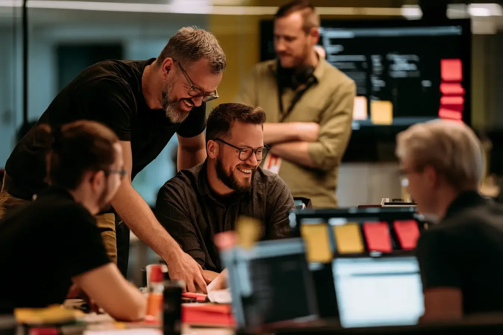

Ownership
Every team runs its own models and pipelines end to end, from ingestion to the client meeting.
We are a 300-person company that still ships like a research lab: small teams, real datasets, and decisions that reach millions of people.
Every team runs its own models and pipelines end to end, from ingestion to the client meeting.
Dedicated time for research, internal papers reviewed by peers, and a yearly methods week hosted by a different office each time.
Private healthcare, six weeks of leave, relocation support and an equipment budget that is actually enough.
